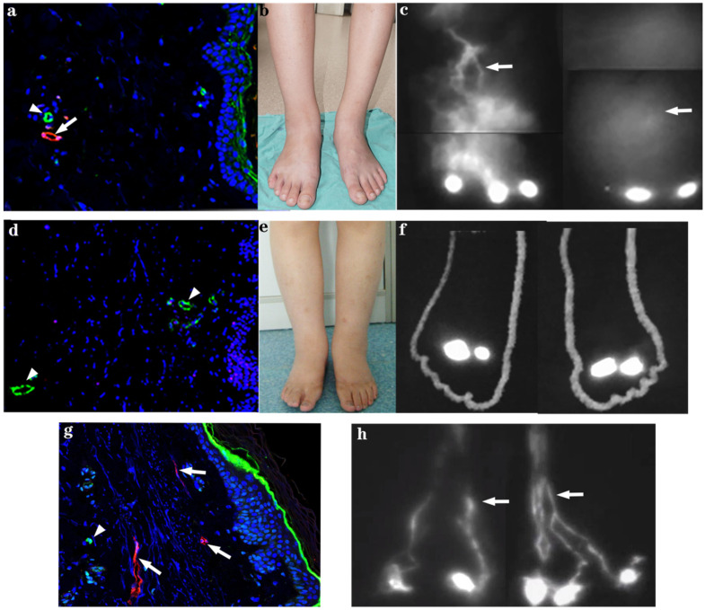
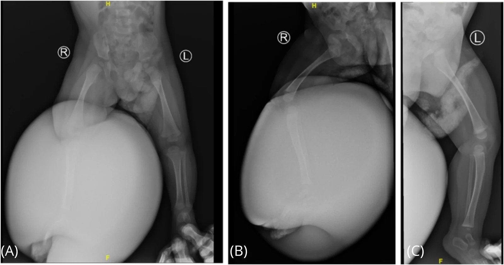
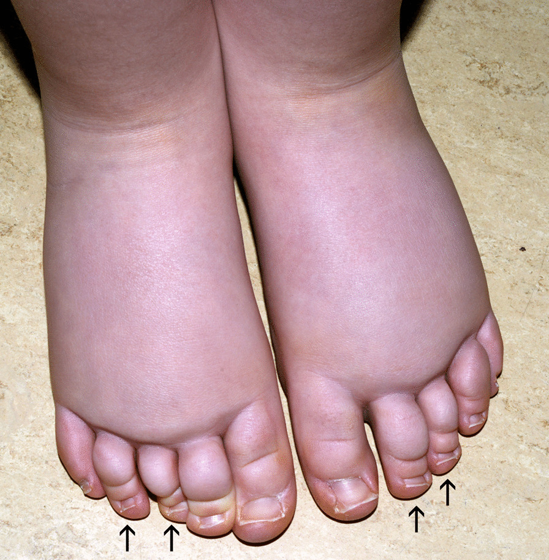
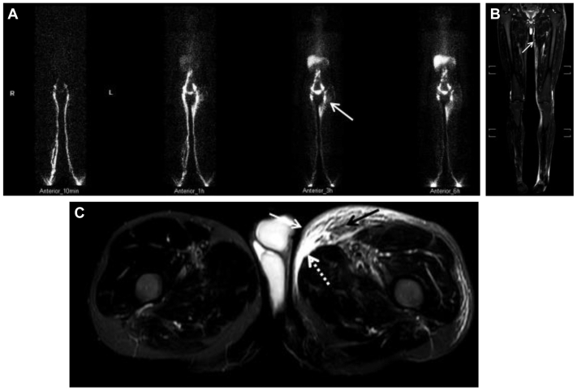

1466 — Phù bạch huyết bẩm sinh ở trẻ (Milroy – Meige): chẩn đoán hình ảnh và khi nào can thiệp
Tags: pattern:phu-chi pattern:phu-mot-ben pattern:day-mo-duoi-da vung:chi-duoi vung:bach-huyet vung:nhi protocol:lymphoscintigraphy protocol:ICG-lymphography protocol:MRI protocol:CDT score:MDACC
Mức chắc chắn (certainty): tổng hợp y văn (literature synthesis) — số liệu chính từ bài tổng quan nhi khoa (PMC12640678), khuyến cáo quốc gia Pháp về phù bạch huyết nguyên phát (PMC7789008), đoàn hệ 29 bệnh nhân Milroy có ICG (PMC8535675), nghiên cứu 94 bệnh nhân phù chi dưới nguyên phát đối chiếu MRI – xạ hình (PMC11523316), bài tổng quan cơ chế – điều trị (PMC12631335) và nghiên cứu ICG – siêu âm hạch (PMC13008088). Chỗ suy luận được đánh dấu [suy luận].
Vì sao phải có bài riêng: 1858 nói về ghép hạch bạch huyết ở người lớn, 6157 về tràn dưỡng trấp màng tim, 1822 về DCMRL. Nhưng trẻ phù chi từ nhỏ là một bệnh cảnh khác: khởi phát < 1 tuổi, tổn thương thường hai bên, và nguy cơ tràn dưỡng chấp màng phổi – ổ bụng đe dọa tính mạng. Điểm chết người là 1/4 trẻ phù chi dưới bị chẩn đoán nhầm không phải phù bạch huyết (PMC12640678) — và ngược lại, phù do tim/thận bị điều trị như phù bạch huyết nhiều năm.
1. Tổng quan bệnh học – cơ chế hình ảnh
- Bệnh học (pathology): phù bạch huyết là suy giảm vận chuyển bạch huyết → dịch giàu protein ứ trong mô kẽ → viêm, xơ hóa, phì đại mô mỡ (PMC12631335). Ở thể nguyên phát, mạch bạch huyết bất sản (aplasia), giảm sản (hypoplasia), hoặc giãn – giảm nhu động; mạch còn nhưng không bơm được gọi là "bất sản chức năng" (functional aplasia) (PMC8535675).
- TẠI SAO phù KHÔNG ấn lõm (non-pitting) và TẠI SAO da dày: dịch kẽ nồng độ protein cao hơn phù do tim/thận → thu hút nguyên bào sợi, lắng collagen và tăng sinh mô mỡ; sau nhiều tháng mô dưới da xơ hóa nên không còn "hố ấn", da dày, có thể papillomatosis. Đây là lý do siêu âm thấy lớp dưới da dày, tăng phản âm chứ không chỉ "phù".
- Dấu Stemmer — ngưỡng lâm sàng: không thể nhấc (pinch) da ở gốc ngón chân thứ 2; độ nhạy 92%, độ đặc hiệu 57% (PMC12640678) — nghĩa là rất tốt để nghi ngờ, nhưng dương tính không chứng minh được nguyên nhân.
- Dịch tễ: phù bạch huyết nguyên phát gặp 1/100.000 trẻ (Mỹ) (PMC12640678). Trong các series gần đây 58–70% là nữ (series cũ tới 80%); bé trai khởi phát lúc sinh hoặc trong năm đầu, bé gái thường 9–11 tuổi (PMC7789008). Trễ chẩn đoán trung bình ~10 năm từ lúc khởi phát đến lần khám chuyên khoa đầu tiên (PMC7789008).
- Di truyền — bảng tối thiểu cần nhớ: Milroy (phù bạch huyết bẩm sinh type 1A) = đột biến trội FLT4/VEGFR3; Meige (type 2) = FOXC2; GJC2 (Meige khởi phát muộn), KIF11 (hội chứng đầu nhỏ – phù bạch huyết – bệnh võng mạc), EPHB4 (phù thai), PIEZO1, TIE1 (thể khởi phát muộn), CCBE1 (Hennekam) (PMC12640678; PMC12631335; PMC11245153).
- Milroy — số liệu kiểu hình và hình ảnh: 29 bệnh nhân, 28 biến thể FLT4 (26 missense), tuổi trung bình 14,1, 14 nam/15 nữ; làm ICG lymphography ở 23 người thấy mạch bạch huyết ngoằn ngoèo, thuốc lên chậm tới cổ chân/đầu gối ở 15/23 (65%) (PMC8535675).
- TẠI SAO khởi phát < 1 tuổi là dấu hiệu nặng: ở nhóm này tần suất biến chứng bạch huyết (tràn dưỡng chấp màng phổi, dưỡng chấp ổ bụng) lên tới 75% (PMC12640678) — tức bệnh không chỉ ở chân.
- Phù bộ phận sinh dục: gặp ở 8–18% trẻ phù bạch huyết nguyên phát, đa số là bé trai, thường kèm chi dưới (PMC12640678) — phải khám và hỏi, vì trẻ không tự nói.
- Hình ảnh là để TRẢ LỜI 3 CÂU: (1) có đúng là phù bạch huyết không? (2) mạch bất sản/giảm sản/giãn? (3) có dịch ổ bụng – màng phổi – màng tim kèm theo không?

Hình: trên – bệnh nhân nữ Milroy đơn thuần: (a) mạch bạch huyết trung bì (mũi tên) và mao mạch máu; (b) phù hai chân; (c) mạch bạch huyết ngoằn ngoèo, không đều. Dưới – bệnh nhân khác: (d) mạch bạch huyết trung bì thưa; (e) phù; (f) mạch ngoằn ngoèo tới cổ chân; (g,h) mạch bất thường hai bên. Nguồn: Genes (Basel) 2021, PMC8535675, Fig. 2, CC BY 4.0.2. Mẫu hình + chẩn đoán phân biệt theo tuổi khởi phát (gamut)
- Bẩm sinh – khởi phát < 1 tuổi: Milroy (FLT4), MCLMR (KIF11), Hennekam (CCBE1), Turner/Noonan, EPHB4 (phù thai/hydrops). Đặc điểm: hai bên, đối xứng, từ bàn chân lên, kèm móng mọc ngược (upslanting nails), ngắn móng (brachyonychia) ở Milroy (PMC7789008).
- Trẻ em 1–12 tuổi: tiếp tục Milroy biểu hiện muộn; thể nguyên phát đơn thuần; cân nhắc lipedema nếu trẻ gái dậy thì, bàn chân không phù.
- Vị thành niên 13–21: Meige (FOXC2, GJC2), lipedema khởi phát dậy thì, phù do thuốc/obesity.
- Người lớn > 21: thể khởi phát muộn (TIE1, GJC2), và phù bạch huyết thứ phát (sau nạo hạch, xạ, nhiễm ký sinh trùng).
- Theo hình thái/khu trú: hai chi dưới đối xứng (Milroy/Meige); một chi (dị dạng bạch huyết khu trú, Klippel–Trenaunay); bộ phận sinh dục (8–18%); mặt/cổ (hiếm, gợi ý hội chứng); phù toàn thân (phù thai, Hennekam, Turner).
- Dấu hiệu gợi ý thể hội chứng (phải tìm): móng vàng, distichiasis (hàng lông mi thứ hai — FOXC2), nhiều hạt cộm da, dị dạng mạch máu, chênh lệch chiều dài chi, dị dạng mặt, chậm phát triển (PMC7789008; PMC12640678).
- Bộ ba phân biệt sát nhất ở trẻ: lipedema (đau, dễ bầm, bàn chân không phù, ranh giới cổ chân), phù do tim/thận/giảm albumin (hai bên, mềm, ấn lõm, toàn thân), huyết khối tĩnh mạch sâu (một bên, đau, cấp).

Hình: X-quang thẳng (A) và nghiêng (B) hai chi dưới ở trẻ 6 tháng với phù bạch huyết bẩm sinh khổng lồ: mô mềm phì đại rõ bên phải, xương không tổn thương. Nguồn: Front Surg 2026, PMC13718031, Fig. 2, CC BY 4.0.Vì sao vẫn chụp X-quang dù biết là bệnh mô mềm
- X-quang loại trừ nguyên nhân xương (loạn sản, gãy bệnh lý, viêm xương) và cho thấy mức phì đại mô mềm — hữu ích khi trẻ không hợp tác MRI; nhưng không đo được mạch bạch huyết và không phân biệt được phù bạch huyết với phù khác. Không dùng X-quang để chẩn đoán. [suy luận]
3. Bảng so sánh phân biệt (ma trận đối chiếu)
| Thực thể (entity) | Hình ảnh / lâm sàng điển hình | Chốt vào (rule-in) | Chốt loại (rule-out) | Gợi ý xác nhận |
|---|---|---|---|---|
| Milroy (type 1A, FLT4) | Phù hai chân từ lúc sinh/năm đầu, móng mọc ngược, ngắn móng; xạ hình: bất sản/giảm sản mạch + trễ vận chuyển | Khởi phát < 1 tuổi + hai bên + tiền sử gia đình trội + FLT4 | Phù một bên, khởi phát muộn, không móng bất thường → nghĩ khác | Xạ hình bạch huyết; ICG; panel gen |
| Meige / distichiasis–lymphedema (FOXC2) | Phù khởi phát dậy thì, thường nữ, có thể distichiasis, móng vàng | Distichiasis + phù chi dưới khởi phát 13–21 tuổi | Khởi phát sơ sinh → Milroy | Khám mắt tìm hàng mi thứ hai, gen FOXC2 |
| MCLMR (KIF11) | Đầu nhỏ + chậm phát triển + phù bạch huyết + bệnh võng mạc | Chu vi đầu nhỏ + phù + tổn thương võng mạc | Phù đơn thuần, phát triển bình thường | Đo vòng đầu, soi đáy mắt, gen |
| Turner / Noonan / phù thai | Hydrops fetalis, phù toàn thân, cổ ngắn, dị dạng | Phù thai + dị dạng + karyotype | Phù chi dưới đơn thuần | Siêu âm thai, karyotype, siêu âm tim |
| Lipedema | Trẻ gái dậy thì, đau, dễ bầm, mỡ hai chân đối xứng, bàn chân KHÔNG phù | Bàn chân không phù + ranh giới cổ chân + đau | Phù cả bàn chân, không đau → phù bạch huyết | Nghiệm pháp Stemmer âm tính, không cần hình ảnh mạch |
| Phù do tim/thận/giảm albumin | Hai bên, mềm, ấn lõm, phù quanh hốc mắt, toàn thân | Ấn lõm + bệnh tim/thận + albumin thấp | Phù cứng, không lõm, khu trú chi → bạch huyết | Albumin, TSH, creatinine, siêu âm tim |
| Dị dạng bạch huyết / Klippel–Trenaunay | Một chi, bớt mạch máu, chi dài/to, nang bạch huyết trên MRI | Bớt + phì đại chi + nang/dị dạng trên MRI | Hai chi đối xứng, không bớt → nguyên phát | MRI có/không cản quang, siêu âm |
4. Protocol chẩn đoán + hệ phân độ ICG và ngưỡng điều trị
- Lâm sàng (làm trước mọi hình ảnh): Stemmer, chu vi/thể tích chi, khám bộ phận sinh dục, móng, mắt (distichiasis), dị dạng, tiền sử gia đình, đếm đợt viêm mô tế bào (cellulitis).
- Xét nghiệm tối thiểu: albumin, TSH, creatinine, urê, AST/ALT, công thức máu, tổng phân tích nước tiểu để loại phù toàn thân (PMC12640678).
- Siêu âm: đo độ dày da/mô dưới da, tìm mạch bạch huyết giãn; ngưỡng bất thường trên siêu âm hạch bạch huyết là giãn ≥ 0,3 mm (PMC13008088). Siêu âm không đau, không bức xạ → lựa chọn đầu tay ở trẻ nhỏ.
- Xạ hình bạch huyết (lymphoscintigraphy): chuẩn vàng, độ nhạy 92%, độ đặc hiệu 100%; thường làm sau 7–8 tuổi vì cần hợp tác (PMC12640678). Dấu hiệu: trễ vận chuyển, trào ngược trung bì (dermal backflow), bất đối xứng hạch, mạch bàng hệ; phân biệt được bất sản/giảm sản vs tăng sản nhưng không phải lúc nào cũng suy ra nguyên nhân (PMC12640678).
- ICG lymphography (huỳnh quang cận hồng ngoại): thời gian thực, không bức xạ, chỉ thấy mạch nông tới độ sâu ~1,5 cm; tương đương xạ hình về đánh giá độ nặng, an toàn ở trẻ (PMC12640678; PMC12631335). Phân độ MD Anderson (MDACC): thấy mạch thẳng liên tục = giai đoạn 0–I (còn mạch thu), khi bệnh tiến triển mạch bị ngắt/không thấy và thay bằng dermal backflow từng đoạn hoặc lan tỏa (PMC13329518). Dạng splash xuất hiện sớm, stardust đi kèm thay đổi cấu trúc và dày da nhiều hơn (PMC13008088).
- MRI không cản quang: dùng khi trẻ nhỏ/không hợp tác xạ hình, hoặc cần quy hoạch phẫu thuật. Các dấu hiệu được chuẩn hóa: dày da rõ, dấu đường song song (parallel line), dấu lưới (grid), dấu tổ ong (honeycomb), dấu dải (band), hồ bạch huyết (lymph lake), dấu liềm (crescent); dấu viền trung bì (dermal rim sign, DRS) = dày da + lưới/tổ ong + dải — dự báo dermal backflow với Se 82%, Sp 64%, độ chính xác 77% trên 94 bệnh nhân (PMC11523316).
- DCMRL (chụp bạch mạch bằng MRI tiêm hạch): khi cần đánh giá ống ngực/trung tâm và tràn dưỡng chấp — xem 1822.
- Di truyền: chỉ định khi khởi phát bẩm sinh, có biểu hiện nội tạng (dưỡng chấp, phù thai), dị dạng, chậm phát triển, tiền sử gia đình (PMC12640678).
flowchart TD
A[Trẻ phù chi] --> B{Ấn lõm? Phù toàn thân?}
B -->|Có| C[Loại phù tim-thận-giảm albumin: xét nghiệm máu, nước tiểu, siêu âm tim]
B -->|Không, khu trú chi| D[Stemmer + đo chu vi + khám sinh dục, móng, mắt]
D --> E{Trẻ trên 7-8 tuổi và hợp tác?}
E -->|Có| F[Xạ hình bạch huyết]
E -->|Không| G[Siêu âm + ICG lymphography]
F --> H{Tràn dưỡng chấp hoặc bất thường trung tâm?}
G --> H
H -->|Có| I[MRI không cản quang hoặc DCMRL]
H -->|Không| J[Gen + CDT + theo dõi cellulitis]
I --> J
- Điều trị: liệu pháp giải ứ toàn diện (complete decongestive therapy, CDT) là chuẩn — giai đoạn 1 băng ít đàn hồi 24/24 trong 5 ngày – 3 tuần + dẫn lưu bạch huyết bằng tay + chăm sóc da; giai đoạn 2 tất/vòng nén ban ngày; giảm thể tích 30–60% tùy cách đo (PMC7789008). Phẫu thuật (nối mạch bạch huyết – tĩnh mạch LVA, ghép hạch VLNT, cắt bỏ mô thừa) chỉ sau khi CDT thất bại và khi còn mạch thu; xem 1858.
- Theo dõi: thể tích chi mỗi 3–6 tháng, số đợt cellulitis, tăng trưởng, chất lượng sống; điều trị cellulitis sớm vì mỗi đợt làm phù nặng thêm (PMC12631335).
5. Biến thể bình thường và cạm bẫy
- Cạm bẫy #1 — chẩn đoán nhầm là phổ biến: 1/4 trẻ phù chi dưới được chẩn đoán là phù bạch huyết nhưng thực ra không phải, và ngược lại nhiều trẻ phù bạch huyết bị gọi là "béo/phù sinh lý" (PMC12640678). → Không chẩn đoán chỉ dựa vào "chân to".
- Cạm bẫy #2 — phù hai bên là bệnh toàn thân cho đến khi chứng minh khác: luôn loại tim, thận, giảm albumin, suy giáp trước khi gắn nhãn "bẩm sinh".
- Cạm bẫy #3 — xạ hình bình thường không loại trừ bệnh sớm: trong giai đoạn đầu, bất thường có thể khu trú từng đoạn; ICG nhạy hơn ở giai đoạn chức năng sớm, còn thay đổi cấu trúc (giãn mạch ≥ 0,3 mm) xuất hiện muộn hơn (PMC13008088). → Xạ hình âm tính + nghi ngờ cao → làm ICG/MRI.
- Cạm bẫy #4 — ICG chỉ thấy mạch nông: độ sâu tối đa ~1,5 cm; mạch sâu và ống ngực không đánh giá được — cần MRI/DCMRL (PMC12631335).
- Cạm bẫy #5 — dấu viền trung bì trên MRI KHÔNG đồng nghĩa trào ngược trung bì: Sp chỉ 64% → dương tính giả đáng kể; dùng để gợi ý/theo dõi, không thay xạ hình (PMC11523316).
- Cạm bẫy #6 — "chỉ phù chân" là đọc thiếu: khởi phát < 1 tuổi có tới 75% biến chứng dưỡng chấp (màng phổi, ổ bụng) — phải siêu âm ngực/bụng khi trẻ khó thở, bụng to (PMC12640678).
- Cạm bẫy #7 — móng mọc ngược bị chẩn đoán là nấm móng: ở Milroy, upslanting nails/brachyonychia là dấu hội chứng, không phải nhiễm nấm; điều trị nấm nhiều năm mà không ai khám mạch bạch huyết.
- Cạm bẫy #8 — phù bộ phận sinh dục bị bỏ qua: 8–18% trẻ có, đa số trai; trẻ không tự nói và phụ huynh không nhìn — phải khám chủ động (PMC12640678).
- Biến thể bình thường: phù nhẹ bàn chân ở trẻ sơ sinh sau sinh vài ngày, phù "béo" hai chân ở trẻ dậy thì không đau, Stemmer âm tính → không phải phù bạch huyết.

Hình: phù hai chân ở trẻ gái 4 tuổi, phù có từ lúc sinh, kèm móng mọc ngược (upslanting nails) và ngắn móng (brachyonychia, mũi tên) — dấu gợi ý thể bẩm sinh/di truyền. Nguồn: Orphanet J Rare Dis 2021, PMC7789008, Fig. 3, CC BY 4.0.6. Tự lượng giá — Blind Quiz
Ca 1 — Bé trai 6 tháng, chân phải to dần từ lúc sinh, không đau, không sốt. Mẹ cho biết ông ngoại cũng "chân to từ nhỏ".
- Câu hỏi: Bất thường chính trên phim? Nghĩ 3 chẩn đoán? Xét nghiệm/hình ảnh nào chốt?
Bấm để hiện đáp án
- Bất thường: phì đại mô mềm khổng lồ chi dưới phải, xương bình thường.
- Nghĩ: Milroy (FLT4), dị dạng bạch huyết/Klippel–Trenaunay, phù do nguyên nhân toàn thân (ít khả năng vì một bên).
- Chốt: xạ hình bạch huyết (nếu hợp tác) hoặc ICG; siêu âm bụng/ngực tìm dưỡng chấp; panel gen FLT4 vì có tiền sử gia đình trội. Khởi phát < 1 tuổi → nguy cơ dưỡng chấp tới 75%.
- Nguồn: Front Surg 2026, PMC13718031, Fig. 2, CC BY 4.0; số liệu PMC12640678.
Ca 2 — Bé gái 12 tuổi, hai chân phù từ nhỏ, không đau. Khám: Stemmer dương, móng mọc ngược. Bác sĩ chỉ định ICG lymphography.
- Câu hỏi: Mô tả bất thường trên ICG? Thuốc này nhìn được sâu bao nhiêu? Vì sao không thấy ống ngực?
Bấm để hiện đáp án
- Bất thường: mạch bạch huyết ngoằn ngoèo, không đều, lên rất chậm tới cổ chân/đầu gối; một số đoạn mất liên tục — phù hợp tổn thương giảm sản/bất sản chức năng ở Milroy (15/23 bệnh nhân trong đoàn hệ có hình ảnh này).
- Độ sâu: ICG chỉ thấy mạch nông tới ~1,5 cm dưới da.
- Vì sao không thấy ống ngực: ống ngực nằm sâu trong trung thất → cần MRI/DCMRL nếu nghi tràn dưỡng chấp.
- Nguồn: Genes (Basel) 2021, PMC8535675, Fig. 2, CC BY 4.0; giới hạn độ sâu: PMC12631335.
Ca 3 — Bé gái 16 tuổi, phù chân trái 6 tháng. Xạ hình: mạch bạch huyết trái không hiện, có trào ngược trung bì ở cẳng chân; không thấy hạch bẹn trái.

- Câu hỏi: Mô tả hai loại hình ảnh? Nghĩ nguyên nhân? Bước tiếp theo?
Bấm để hiện đáp án
- Xạ hình (A): mạch bạch huyết chi trái không/ít hiện, trào ngược trung bì (dermal backflow) ở đùi/cẳng chân trái (mũi tên) — phù hợp phù bạch huyết nguyên phát thể giảm sản/bất sản.
- MRI không cản quang (B,C): dày da và mô dưới da, hình lưới/tổ ong và dải — tương ứng dermal rim sign, dự báo trào ngược trung bì (Se 82%, Sp 64%).
- Nghĩ: phù bạch huyết nguyên phát (Meige/nguyên phát) — không phải DVT vì phù mạn, không đau cấp.
- Tiếp theo: CDT + nén; siêu âm/hỏi biến chứng; cân nhắc gen nếu có dị dạng/dậy thì sớm; không dùng kháng sinh dự phòng dài hạn trừ khi cellulitis tái phát.
- Nguồn: J Vasc Surg Venous Lymphat Disord 2024, PMC11523316, Fig. 3, CC BY-NC-ND 4.0 (dùng nguyên bản).
Bài liên quan chéo
- 1858 – Ghép hạch bạch huyết (VLNT)
- 1822 – DCMRL: chụp bạch mạch bằng MRI
- 6157 – Tràn dưỡng trấp màng tim ở trẻ
- 6158 – Phù bạch huyết ở trẻ (PLE)
- 921 – Nút mạch bạch huyết điều trị PLE
Không dùng để chẩn đoán độc lập khi chưa có người hướng dẫn.